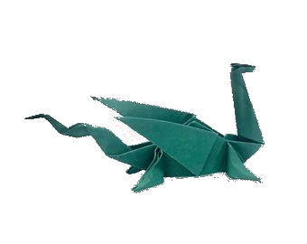
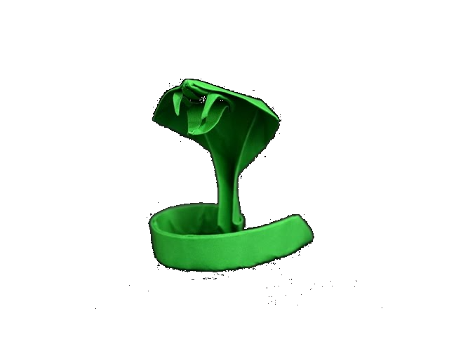

Origami Designs

Facts about Panda Bears
- Pandas are a very rare and endangered species.
- They are usually found in China and Japan.
- They are big, round creatures, and can eat upto 6 times their weight.

Facts about Pigeons
- Pigeons are incredibly complex and intelligent animals.
- They are also very common birds, usually found in industrial areas and apartments.
- Both the male and the female parent birds have respnsibility of caring for the chick.

Facts about Chameleons
- Chameleons are lizards that have the amazing ability to change their skin colour to match their surroundings.
- They also have very long and flexible tails that can wrap around branches.
- They are usually found in Jungles and Rain Forests, but they are very hard to spot as they are camouflaged most of the time.

Facts about Dragons
- A Dragon is a large serpentine creature that appears in the folklore of many cultures worldwide.
- A Dragon can look like a lizard with 4 legs or no legs, and can breathe fire.
- They are always depicted as being very big in size, and can have horns, spikes or hair on them.

Facts about Snakes
- Snakes are cold-blooded reptilian creatures that solely rely on heat energy other than their food.
- Their meals usually consists of mice, rats, small rodents to deers, fawns etc.
- They "slither" on the ground to move, and use their tounges to smell.
Facts about Frogs
- The world's largest frog is the goliath frog of West Africa that can grow to 15 inches and weigh up to 7 pounds.
- Evidence exists proving that frogs have roamed the Earth for more than 200 million years, at least as long as the dinosaurs.
- The frogs diet consists of insects that they catch with their long, sticky tounge, while the frogs baby tadpoles feast on algea in water.